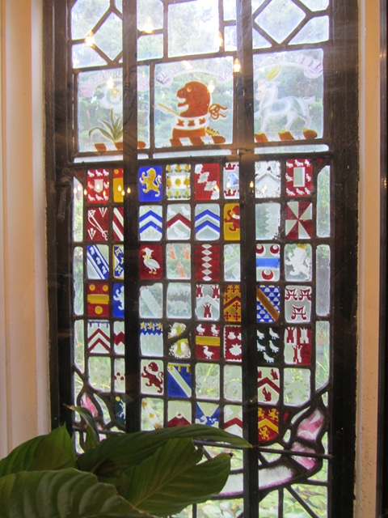
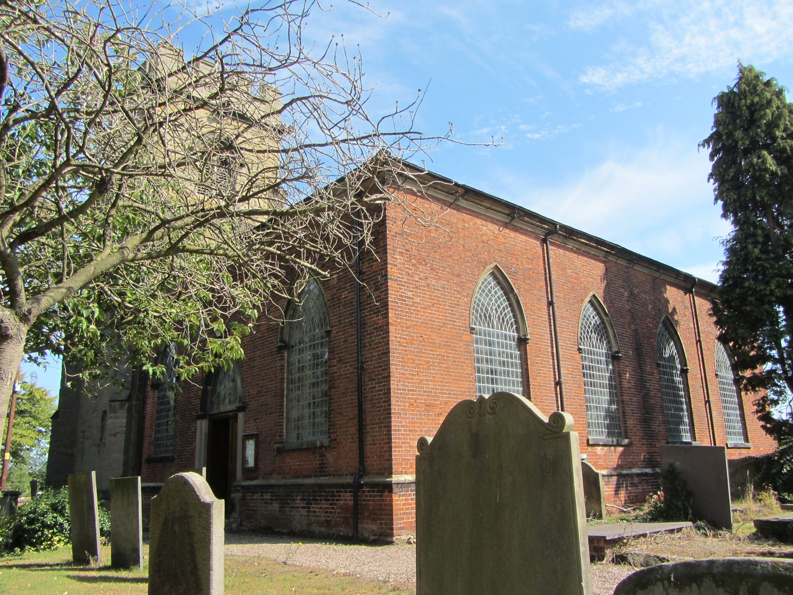
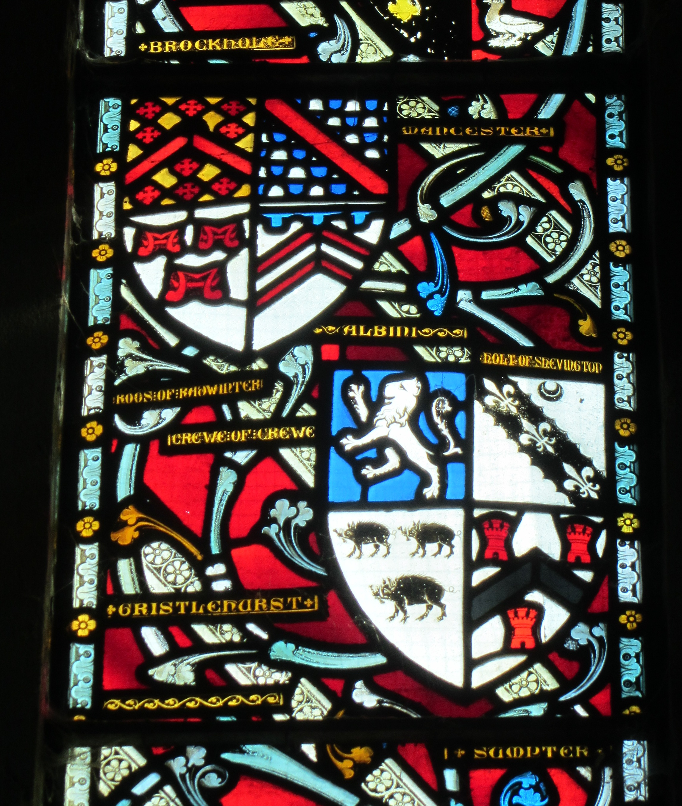
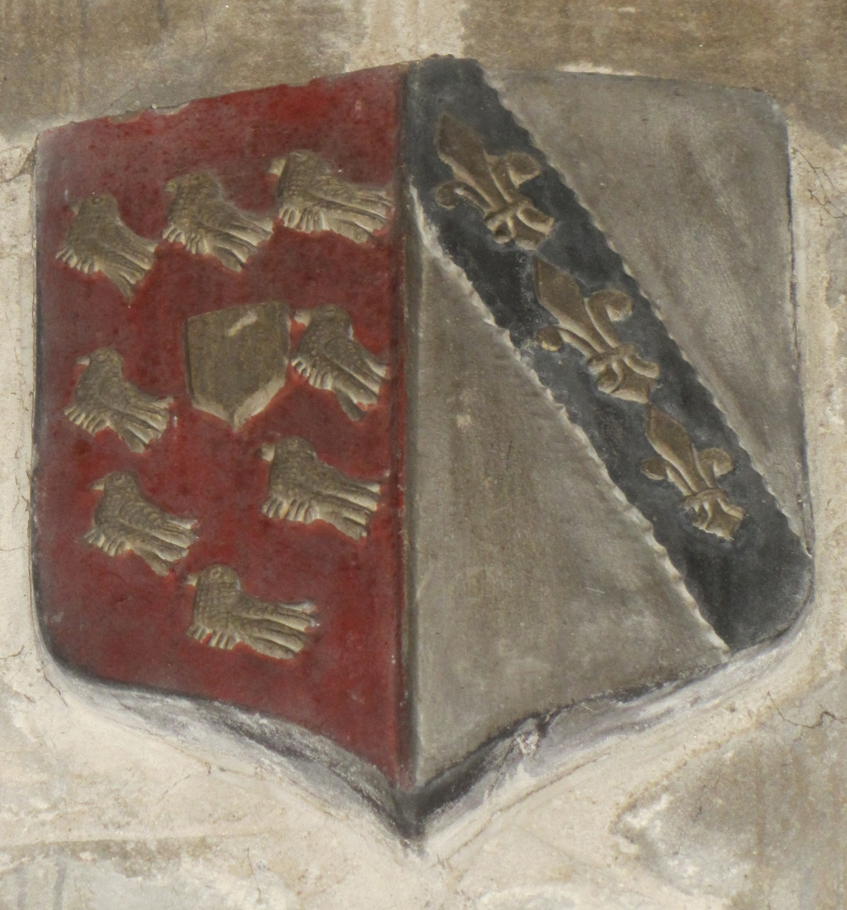
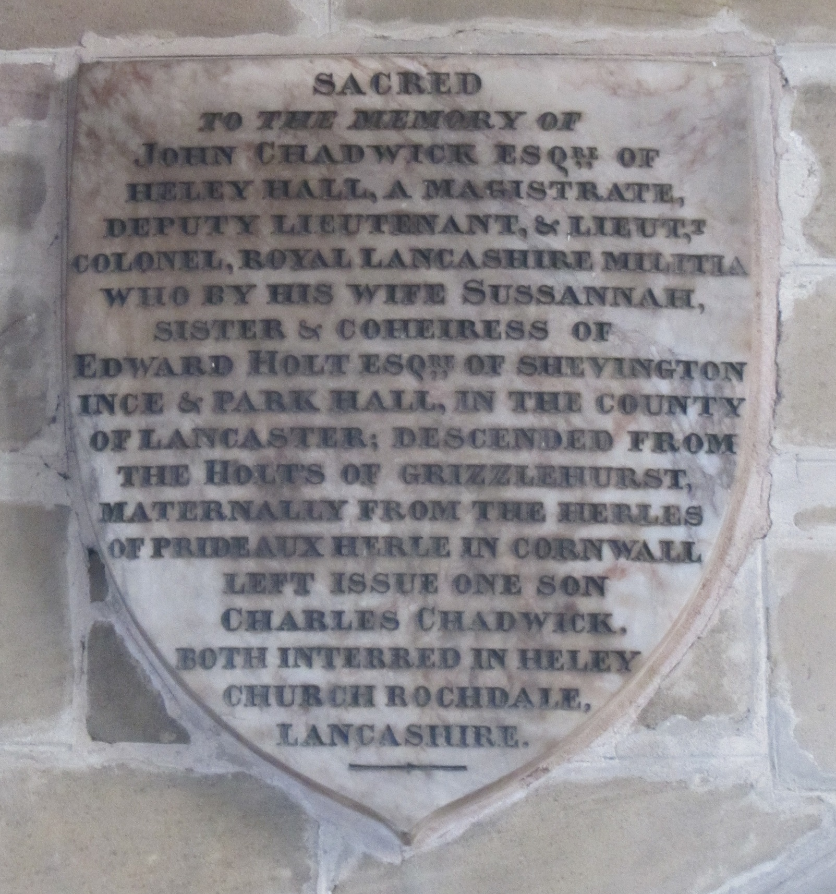
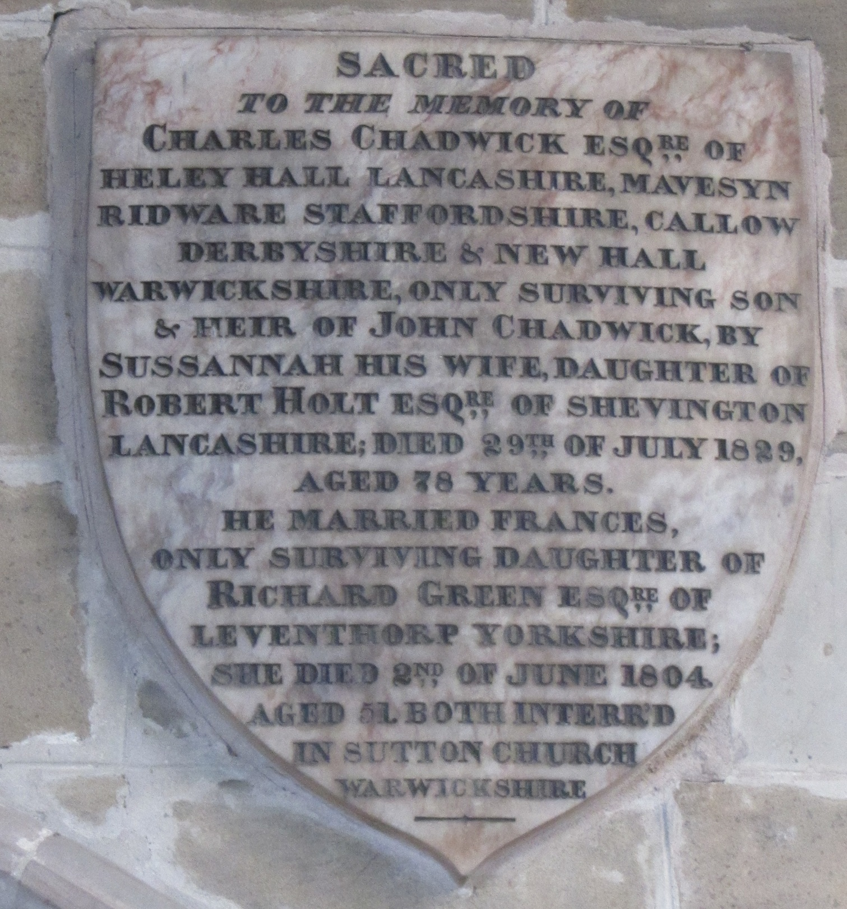
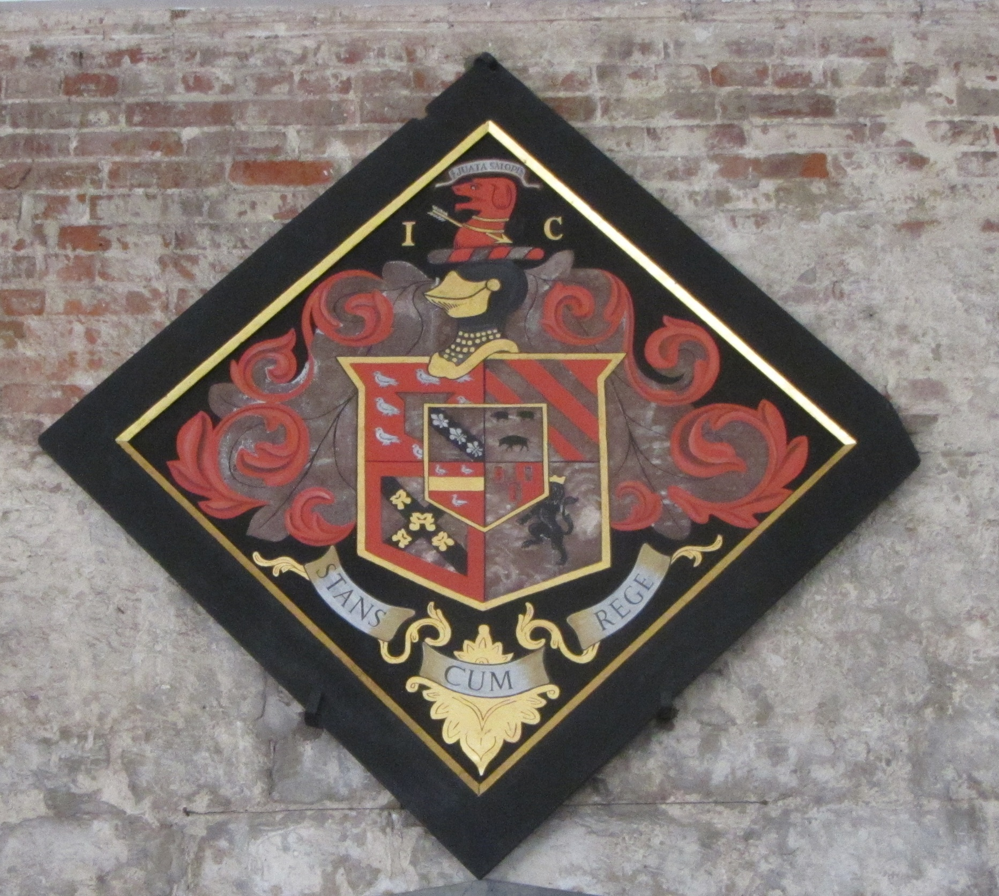

New Hall
New Hall, situated in Sutton Coldfield near Birmingham, is one of the oldest inhabited moated houses in England and a striking example of medieval and Tudor domestic architecture. Originally built in the late thirteenth century as a manor for the Earl of Warwick, the house evolved over several centuries, combining timber-framed ranges, later stone additions, and a distinctive quadrangular layout enclosed by its broad moat. The approach across the stone bridge leads to a courtyard framed by gabled wings, mullioned windows, and surviving elements of the original great hall.Long associated with prominent Midlands families, New Hall reflects the layered history of a fortified manor gradually transformed into a comfortable country residence, while its moat, gardens, and parkland preserve the atmosphere of a much earlier landscape. Within the Hall is a window with the holt of Chadwick quarterings. It is in the Bridge Restaurant.


Modern Location - New Hall, Sutton Coldfield
Walmley Road, Sutton Coldfield, Birmingham B76 1QX
Mavesyn Ridware
St Nicholas Church in Mavesyn Ridware is a small but architecturally distinguished medieval parish church, noted for its rich collection of carved stonework and heraldic glass. The building combines a thirteenth‑century nave and chancel with later additions, all constructed in warm local sandstone that gives the church its characteristic Staffordshire appearance. Its windows are among its most striking features: several contain medieval stained glass fragments, including shields of the Mavesyn (Malvoisin) family—bearing the distinctive crest of a griffin’s head alongside later armorial panels commemorating local gentry. The Holt name is one of the crests within the window. Inside, the church preserves a remarkable series of effigies and monuments, including the celebrated wooden tomb of Sir Robert Mavesyn, which is considered one of the finest medieval effigies in the county. Though modest in scale, St Nicholas is regarded as a remarkable survival in the UK for the richness of its heraldry, the quality of its medieval sculpture, and the unusually complete record it offers of a single manor’s lords across many centuries.





